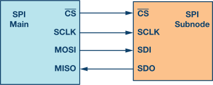

March 9, 2026
Small, cost-effective computer on a chip
Components (image)
Applications: robotics, home automatic, automotive, consumer electronics
(image) how it looks like
a demo image or video
code snippet
example figures + interaction
a demo image or video
code snippet
Hardware interfaces bridge programs and reality

Four primary signals:
Clock ticks → Bits shift → Data captured
Typical SPI transaction:
#include <linux/spi/spidev.h>
#include <sys/ioctl.h>
#include <stdint.h>
uint8_t mode = SPI_MODE_0; // change per datasheet
uint8_t bits = 8;
uint32_t speed = 1000000; // 1 MHz to start safely
ioctl(fd, SPI_IOC_WR_MODE, &mode);
ioctl(fd, SPI_IOC_WR_BITS_PER_WORD, &bits);
ioctl(fd, SPI_IOC_WR_MAX_SPEED_HZ, &speed);uint8_t tx[3] = {0x00, 0x00, 0x00};
uint8_t rx[3] = {0};
struct spi_ioc_transfer tr = {
.tx_buf = (unsigned long)tx,
.rx_buf = (unsigned long)rx,
.len = sizeof(tx),
.speed_hz = speed,
.bits_per_word = bits,
.delay_usecs = 0,
};
int ret = ioctl(fd, SPI_IOC_MESSAGE(1), &tr);
if (ret < 1) { perror("SPI_IOC_MESSAGE"); }Command format (high level):
// Read MCP3008 channel 0 (single-ended)
uint8_t tx[3];
uint8_t rx[3];
tx[0] = 0x01; // start bit
tx[1] = 0x80; // single-ended + channel 0 (0b1000_0000)
tx[2] = 0x00; // filler to clock out result
struct spi_ioc_transfer tr = {
.tx_buf = (unsigned long)tx,
.rx_buf = (unsigned long)rx,
.len = 3,
.speed_hz = speed,
.bits_per_word = 8,
};
ioctl(fd, SPI_IOC_MESSAGE(1), &tr);
// rx[1] & 0x03 contains top 2 bits; rx[2] contains lower 8 bits
int value = ((rx[1] & 0x03) << 8) | rx[2];
printf("ADC=%d\n", value);